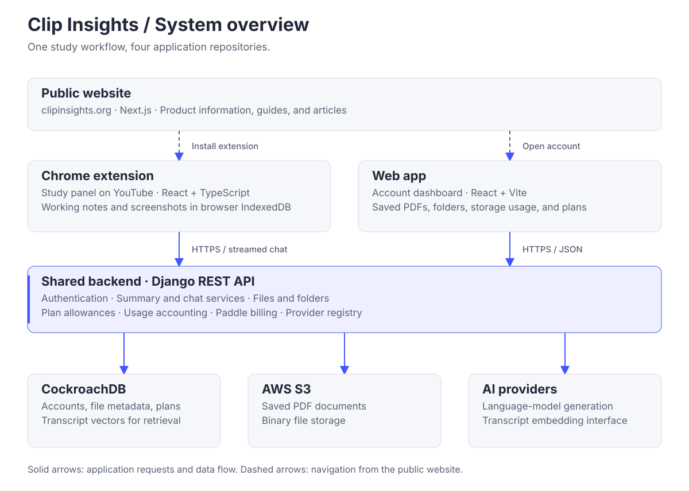
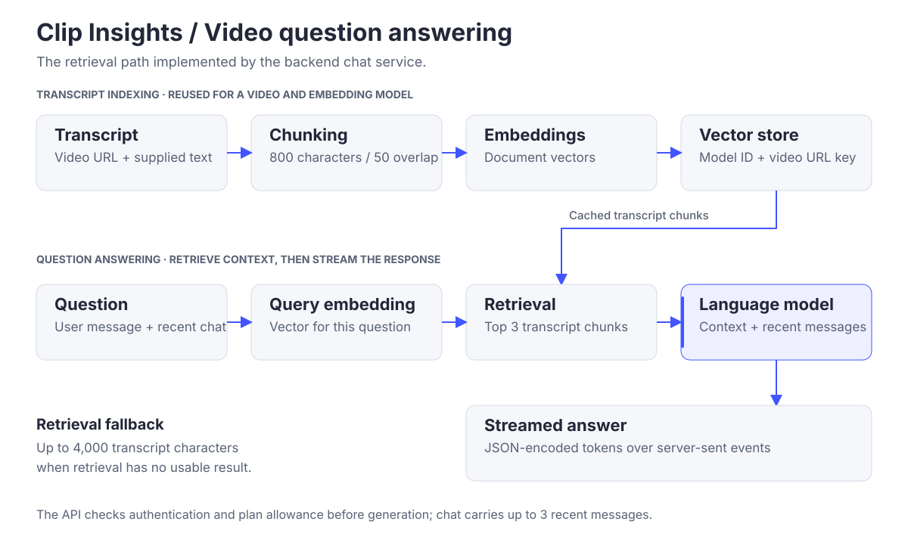
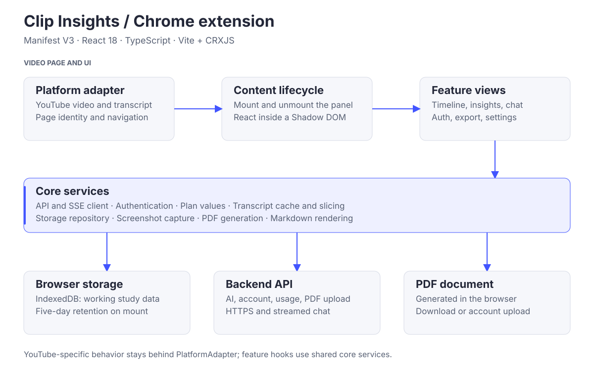
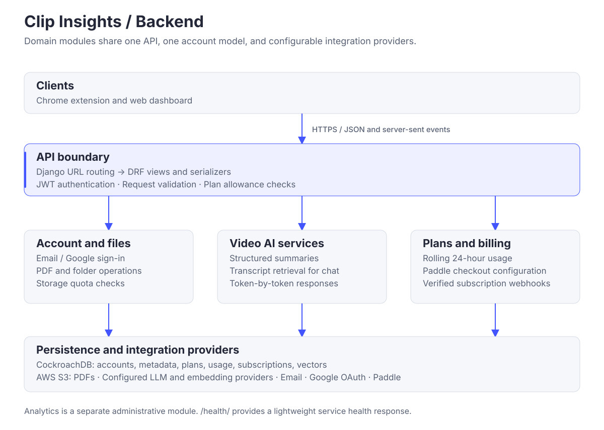
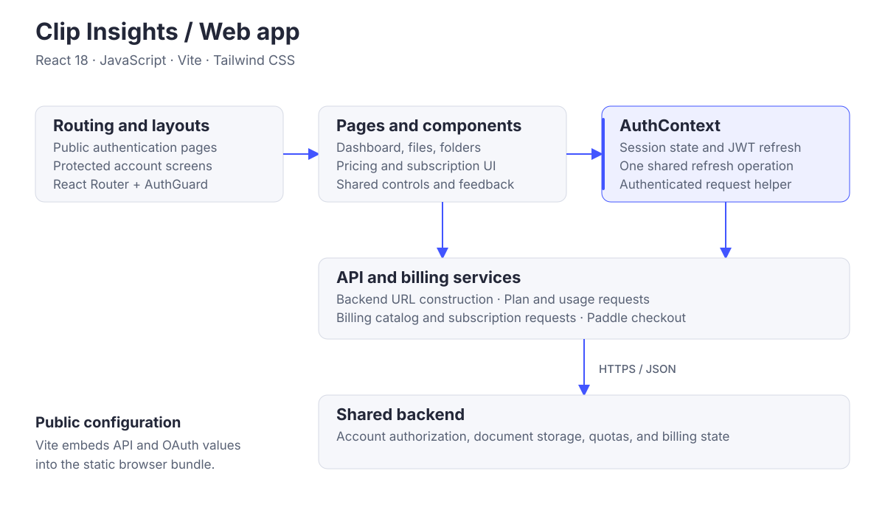
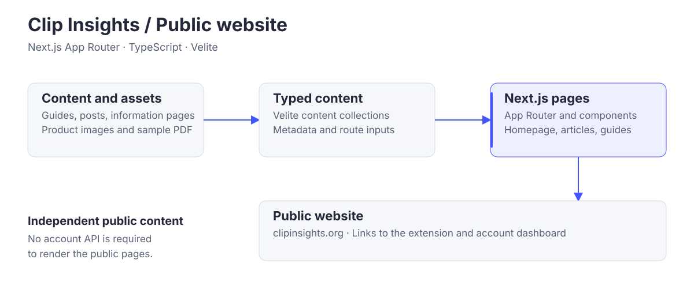

<!doctype html><html lang="en"><meta charset="utf-8"><title>Clip Insights diagrams</title><style>body{margin:0;background:#edf0f6;color:#232738;font:16px Segoe UI,Arial,sans-serif}main{max-width:1200px;margin:40px auto;padding:0 24px}h1{font-size:32px}h2{font-size:18px;font-weight:500;margin:32px 0 12px}img{display:block;width:100%;height:auto;border:1px solid #d6dae5;background:white}</style><main><h1>Clip Insights · Architecture diagrams</h1><section><h2>System overview: the public website, extension and dashboard, shared backend, and data services.</h2></section><section><h2>RAG request flow: transcript indexing, question embedding, top-three retrieval, and streamed response.</h2></section><section><h2>Extension runtime: platform adapter, content lifecycle, feature views, core services, and persistence.</h2></section><section><h2>Backend modules: API boundary, domain services, persistence, and integration providers.</h2></section><section><h2>Web dashboard: routing, pages, AuthContext, API services, and backend.</h2></section><section><h2>Public website: content and assets, Velite collections, and Next.js pages.</h2></section></main></html>